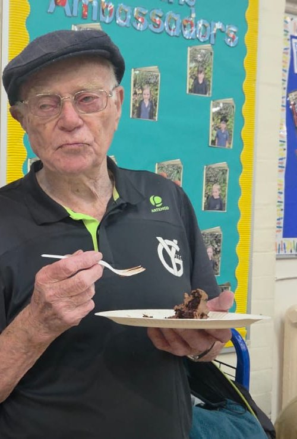

Our story

York Gardens TTC began in 1968, when Tom Draper founded Old Chesterton TTC in Battersea. Tom coached and ran the club right up to his mid-80s.
In the mid-1980s the club moved to the York Gardens community centre and took its name. A few moves later it settled at Fircroft Primary School in Tooting Bec, where we play today.
We now have over 160 members, from first-timers to league players, and two teams in the Sutton League this season.
We win things too


Club nights
Come and play
Just turn up, there's no need to book.
- When
- Monday, Wednesday and Friday
7pm to 11pm - Cost
- £7 per session
- Kit
- Bring your own bat and balls. No kit yet? Get in touch with Mike before you come.
- Where
- Fircroft Primary School
Fircroft Road, Tooting Bec
London SW17 7PP - Questions
- Call or text Mike Noble, our club president, on 07957 300374